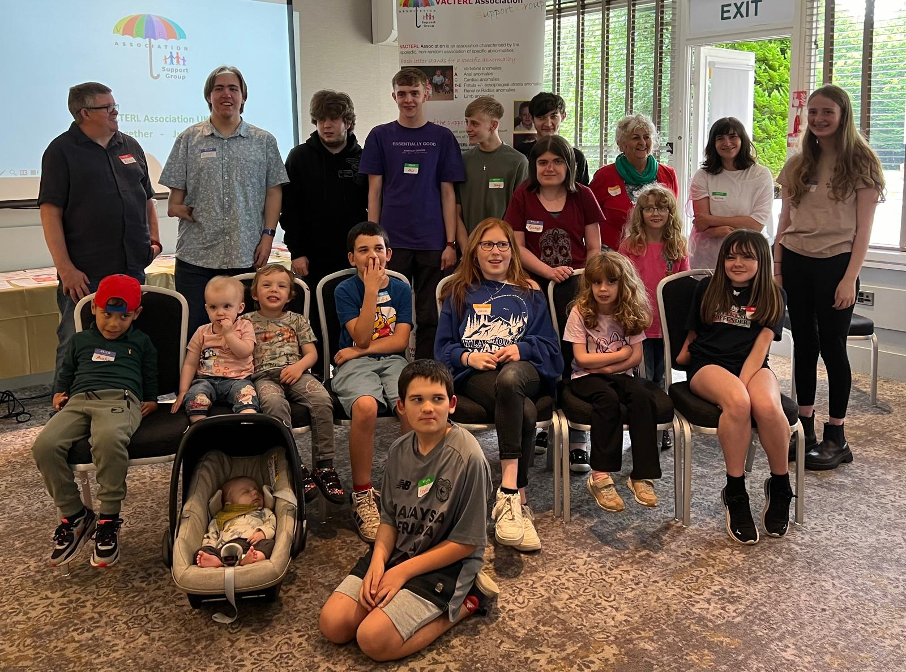
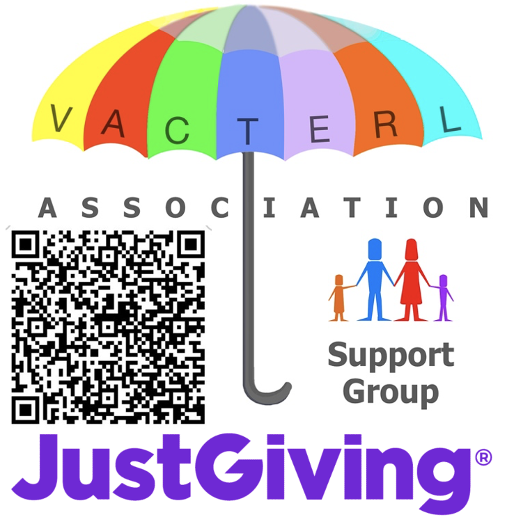

V
Vertebral anomalies
Back bones & spineDifferences in how the bones of the spine form or fuse before birth, such as hemivertebrae, tethered cord, or scoliosis.
We are a welcoming, parent- and peer-led UK network for children, young adults, and families living with VACTERL association. You do not have to navigate complex care in isolation.
VACTERL means a baby is born with 3 or more body differences (such as back bones, bottom opening, heart, food pipe, kidneys, or arms/legs). Every child is different. We bring families and adults with VACTERL together so no one feels alone.

Whether you have a new antenatal or postnatal diagnosis or are an adult living with VACTERL, talk to people who truly understand.
Learn from clinical nurse specialists and adults with lived experience on bowel care, stoma care, continence, and schooling.
Promoting self-esteem for every VACTERL child, trauma-informed medical appointments, and advising the medical profession.
VACTERL association is characterised by the sporadic, non-random association of specific birth differences. A person with three or more features in any combination may be recognised as fitting the VACTERL association.
Differences in how the bones of the spine form or fuse before birth, such as hemivertebrae, tethered cord, or scoliosis.
Anorectal malformations (anal atresia) where the bowel opening requires surgical repair and specialist bowel or stoma management.
Congenital heart defects, ranging from septal openings (VSD/ASD) to more complex structural heart differences.
Tracheo-oesophageal fistula (T-E): an abnormal connection between the windpipe (trachea) and food pipe.
Paired with T as TE (fistula +/- oesophageal atresia): a gap in the food pipe (oesophagus) repaired surgically after birth.
Differences in kidney development or function (renal), or radial dysplasia affecting the thumb side of the forearm.
Differences in the development of arms, hands, thumbs, or legs, supported by hand therapy, orthotics, or prosthetics.
There is a wide range of manifestation. A person with three or more features in any combination may be recognised as fitting in the VACTERL association. However, VACTERL is not a single diagnosis with one single genetic cause. Prevalence is estimated at approximately 1 in 10,000 to 1 in 40,000 live-born infants.
"The differential diagnosis is relatively large… research methods offer promise that the causes of VACTERL association will be better defined in the relatively near future. Antenatal diagnosis can be challenging, as certain component features can be difficult to ascertain prior to birth." — Solomon, B.D. (2011).
For newly diagnosed parents, the early hospital months can feel overwhelming. At our annual Get-Togethers, children featured on our original banner return as young adults, speakers, and mentors.
“I just found it so insightful to see you and the work that you complete. When our son was born, almost 20 years ago, I was told that his condition could be life-limiting. Having you and Alan join the group is sure testament that it is not.”— Parent reflection from our Annual Meeting
Our community spans newborns, school-age children, teenagers, and adults sharing practical wisdom across generations.


From peer connection to specialist clinical talks and medical trauma awareness, everything we do is built around practical, compassionate support.
Connecting parents, carers, and VACTERL children so they can build lasting friendships and confidence.
Bridging families and healthcare professionals with plain-language talks at our annual meetings.
Developed with adult members and the Adult TOF Working Group to help patients feel safe and heard in hospital:
A relaxed, welcoming day for families, young adults, and clinical speakers — featuring our information station, interactive Q&A panels, and Changing Places accessibility information.



Meet the families, children, and committee behind the VACTERL Association Support Group and hear how we have grown together over the years.
Highlights from our 2025 annual gathering — family connections, specialist clinical sessions, and community stories.
We collaborate with charities, clinical teams, and international networks to raise awareness, contribute to research, and signpost families to specialist support.
Become a member, join the volunteer committee, connect on social media, or donate to help fund our annual Get-Together and family resources.
Every contribution helps us run the annual VACTERL Get-Together, provide information packs, and support families across the UK.
Donate on JustGiving →
Scan to DonateJoin our parent and adult community on Facebook, follow us on Instagram, or complete our membership form to stay updated.